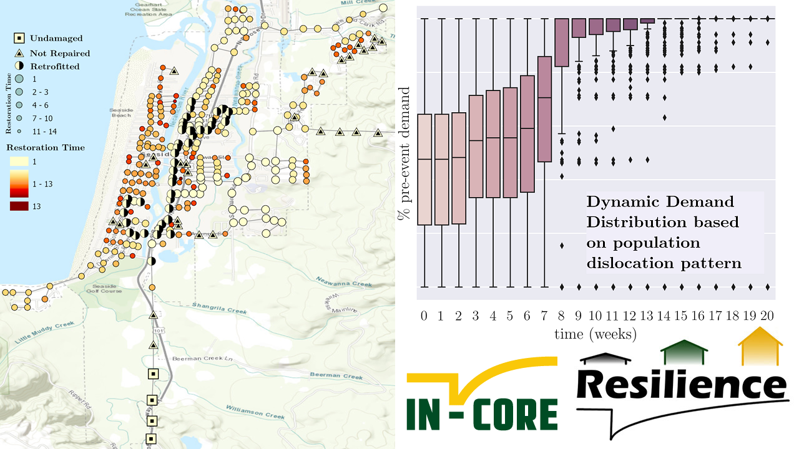

Decision support tools to guide retrofit & restoration of networks using optimization & machine learning
As a part of the NIST Center of Excellence for Risk-Based Community Resilience Planning [Website],
the main goal of this project is to develop decision support tools to help communities, anticipating multiple sources of hazards, find high-quality
(optimal ad near-optimal) solutions to their mitigation and restoration decision problems, applied to infrastructure in two communities: Lumberton, NC, and Seaside, OR.
Machine learning methods (logistic regressio, XGBoost) are extensively used to predict population dynamics and decision behavior.
Special attention is paid to realistically model the decision environment (decentralization, poor communication, agents' bounded rationality, cooperative behavior)
and community's socio-economic characteristics (population dynamics, consumption pattern, capital stock, labor service).
The final goal is to implemnet the tools in the public modeling environment INCORE [Website]
so that community leaders can easily employ the tools for real-world decisions and impacts
[Paper]
[Paper].
Decentralized decision-making for the restoration of interdependent networks
I have modeled a decision-making environment where agents communicate poorly and late, and they use their judgment and expertise to compensate for the lack of communication [Paper], particularly by using mixed-integer programming, spatio-temporal statistics [Paper],
machine learning [Paper], and
efficient sampling methods [Paper].
I have also proposed auctions as a decentralized mechanism for resource allocation in the recovery process [Paper].
My ongoing work is geared to model the realistic but complex interaction of decision-makers and their strategizing for recovery actions, for which I am expanding on Bayesian games.
The game-theoretic approach facilitates the inclusion of realistic behavioral characteristics of agents, including cooperative/competitive attitude, as well as bounded rationality due to satisficing, time constraints, and computational limitations [Paper].
Congestion and observability across interdependent power and telecommunication networks under seismic hazard
We quantify the seismic performance of interdependent electric power and telecommunication systems, while also identifying variables with the highest impact on design.
To address the need for interdependent power and telecommunication models, our probabilistic approach simulates the physical dependency of telecommunication systems on power
via interdependent adjacency and coupling strength, while a topology observability analysis quantifies the cyber dependency of the power system on telecommunications.
We also use new functionality-based performance measures, including data congestion in telecommunications and partial observability in power systems, with our congestion model
estimating variable communication demands after earthquakes [Paper].
Optimal seismic risk mitigation by prioritization of structures for retrofit
The objective of this project is to prioritize a portfolio of buildings for seismic retrofit.
A new set of sensitivity measures is proposed to rank the buildings based on the reduction
in the loss of the entire portfolio per dollar spent on their retrofit.
Here, we consider two decision-making attitudes: risk-neutral and risk-averse.
To quantify the risk, reliability methods are employed in which many interacting
probabilistic models simulate the characteristics of the earthquakes,
structural response of the structures, and ensuing damage and costs
[Paper].
New models are developed to predict repair and retrofit cost of buildings which considers the
conventional construction in Iran, such as masonry structures with and without tie-columns
[Paper].
Finally, the new models are employed to prioritize 114 school buildings for the allocation of a limited budget.
The methodology was implemented in the free software Rtx (Reliability | Risk | Resilience tools) [Website].
Sampling-Based Reliability Sensitivity Analysis Using Direct Differentiation
This study presents the derivation, verification, and application of sampling-based reliability sensitivities. The direct differentiation method is employed
to develop the analytical derivatives of the failure probability, and thus the reliability index, with respect to the distribution parameters
of the underlying random variables in a sampling analysis. Particular attention is devoted to deriving the formulation for correlated random variables with
arbitrary probability distributions. This entails analytical differentiation of the Nataf transformation
[Paper].
The resulting formulation is verified through a linear example with a closed-form solution and a nonlinear example. Thereafter, the proposed approach is
utilized in two real-world applications: seismic reliability of a reinforced concrete structure and prioritization of a building portfolio for retrofit.
The methodology was implemented in the free software Rtx (Reliability | Risk | Resilience tools) [Website].